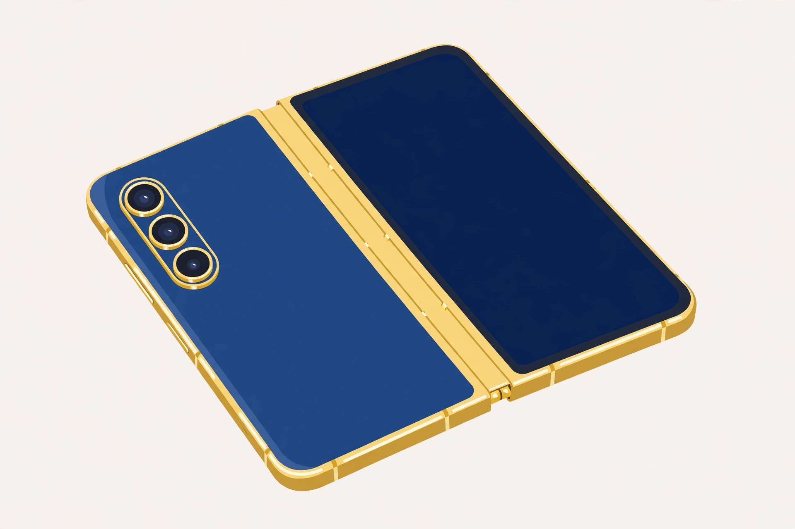

2026년 10월 27일

삼성이 올해 네 번째 폴더블을 준비하고 있습니다. 중국 웨이보 공식 계정에 10월 29일 중국 행사를 예고했고, 티저에는 금색 프레임의 책처럼 펴지는 폴더블이 담겼습니다. 모델명은 삼성이 직접 밝힌 게 아니라, 유명 팁스터가 'W27'이라고 전한 내용입니다.
W 시리즈는 매년 중국 전용으로 나오는 고급 버전입니다. 기본 뼈대는 갤럭시 Z 폴드 8 울트라와 같다고 알려졌는데, 색과 마감이 다릅니다. 짙은 파란색 뒷면에 금색 프레임과 금색 카메라 모듈, 뒷면의 W 시리즈 문양이 포인트입니다.
한국에서 바로 사기 어려운 모델이지만, 폴더블의 고급화 방향을 보여주는 사례로는 재미있습니다. 같은 성능에 색과 패키지, 혜택을 더해 '특별판'으로 만드는 방식이죠. 29일 행사에서 가격과 정식 사양이 나오면, 그때 다시 정리해 보겠습니다.
출처: GSMArena — 삼성의 다음 폴더블, 며칠 뒤 출시, 9to5Google — 삼성 W27 폴더블 유출